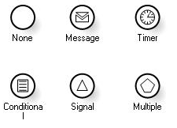
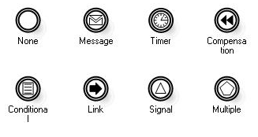
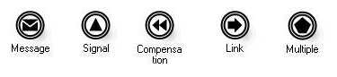
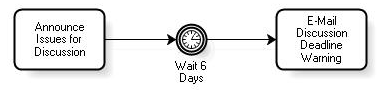
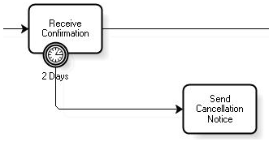
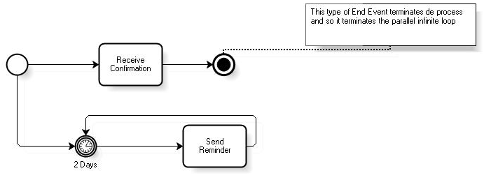
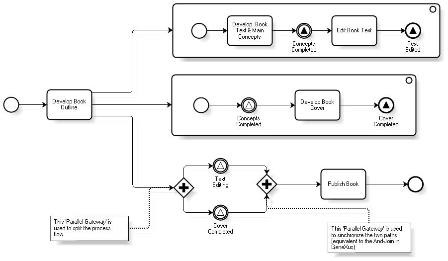
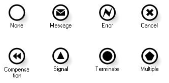

An event is something that happens while a process is running. They affect the process flow and usually have a trigger or a result. They can start, pause, interrupt or end a process flow. An event is represented with a circle, and the border style indicates its type. The three types of events available are as follows:
In turn, each type is subdivided into other events which are represented with an icon displayed within the circle. Start Events Start Events show where a process can begin. There are different types of Start Events that allow you to indicate the different circumstances that can trigger the beginning of a process. These circumstances, such as the arrival of a message or a timer-based alarm, are called ‘triggers’. Below is a description of the types of Start Events, which are classified as core and advanced. Core Start Events
Advanced Start Events
A process can have more than one start event. In addition, start events are optional for top-level processes or sub-processes. In this case, the activities that don’t have predecessors will be the initial tasks. The figure below shows the symbols used to represent each one of these events:  Intermediate Events They represent things that happen during the normal course of a process and usually take place between activities. They can interrupt the normal processing of an activity. All the types of intermediate events can catch events, and some of them can also throw them. When a process flow reaches a catch event, the process stops until the expected event occurs. On the other hand, when the flow reaches a throw event, it is immediately triggered and the flow continues. The types of events that catch events are represented with an empty icon, and those that trigger events are represented with a filled icon. Intermediate events are as follows: Core Intermediate Events
Advanced Intermediate Events
The figure below shows the symbols used to represent catching Intermediate Events:  The figure below shows the symbols used to represent throwing Intermediate Events:  Interruption of Activities using Intermediate Events Events can be attached to the boundary of an activity to model exceptions to the normal flow of the process. The attached event indicates that the task must be interrupted when the event is triggered. These types of events are always catching events. Both tasks and sub-processes are interrupted in the same way. The types of events that can interrupt an activity are as follows:
Compensation events can also be attached to an activity even if they don’t interrupt it, because these events always occur after the task is completed. None Event As with Start Events, a trigger is not always required for an Intermediate Event. These events are used to document that certain activities have been completed or that the process has reached a certain milestone. The name of the Event can provide enough information for this purpose. Timer Event They are used to catch events that indicate that a time period has elapsed and can be used to model delays or deadlines. Delays They are modeled by inserting the Timer Event between activities. They can represent a specific date and time (e.g., wait until April 15 at 5pm), a relative date (e.g., wait 6 days) or a relative repetitive date (e.g., wait until next Monday at 8am). When the timer generates an alert, the process flow continues. The element prior to a delay can be an activity, a gateway or another intermediate event. If the event has a specific date that is in the past, the process is stopped indefinitely. The figure below shows an example of how a delay is modeled:  Deadlines They are modeled by attaching the timer event to the activity. If the event occurs before the corresponding activity is completed, it is immediately interrupted and the flow continues down the path indicated by the event. The figure below shows an example of how a deadline is modeled:  BPMN 1.1 doesn’t allow for the modeling of the case where a deadline should occur without interrupting the task. To this end, we suggest using a pattern similar to the one shown below:  BPMN 2.0 will include the ability to have intermediate events that don’t interrupt activities. Message Event They always operate between Pools. For a catching Message Event, if the message arrives before the flow reaches this element, the message is ignored and the flow is stopped until a new message arrives. They can also be attached to tasks. Signal Event It makes it possible to send or receive signals, which can be exchanged between across process levels (parent process and sub-processes, and vice versa) or between Pools. They are not designed for any specific entity. A catching Signal Event can catch a certain signal identified by its name or any signal. If the Signal Event occurs before the process flow reaches the Signal Event symbol, the process is stopped until a new event arrives. This type of events can be used as follows:
The figure below shows an example of how the Signal Event is used:  In the example, the first sub-process triggers two Signal Events: an intermediate event called 'Concepts Completed' and another one at the end with an end event that is called 'Text Edited' and will be described later. The second sub-process has a catching Signal Intermediate Event that will stop the process until the arrival of a 'Concepts Completed' signal. Note that a Signal Start Event is not used because it is a sub-process and therefore the start is determined by the parent process. This sub-process ends with the triggering of a Signal End Event called 'Cover completed'. In parallel to these sub-processes there is a waiting period for the arrival of the signals 'Text Edited' and 'Cover Completed'. The flow continues only after both signals are received. Error Event They are always catch events and are used attached to an activity. They indicate that the activity to which they are attached must be interrupted if an error occurs. Errors are generated by applications or systems involved in the activity (transparent to the process). Cancel Event They are used to handle situations in which a transaction is canceled. They can only be attached to transaction sub-processes and for this reason they are always catch events. These events are triggered by Cancel End Events included in sub-processes. Compensation Event Catch Compensation Events can only be attached to activities. On the other hand, throw events are used in the normal flow of a process. For more details about these events, read Compensation and Transactions Conditional Event The Conditional Event is used to model a situation in which the process waits for a condition to be met. This condition will usually involve the relevant data of the process. They can be used attached to a task, in the normal flow or as part of a gateway based on events (read Gateways) Link Event They are always used in pairs, with a source (throw) and a target (catch) event. To ensure the pairing, both events must have the same label. Their objective is to create a virtual sequence flow and must exist within a single process. They can't be used for communicating between processes –Signal Events are used for this purpose. These events are used in two ways:
There can only be one target link event with the same label, but there can be many source link events with the same label. Multiple Event It represents a collection of Intermediate Event triggers. The collection of triggers must be all throwing or all catching events, but it can’t contain both at the same time. The events that can be used in this collection are as follows: Message, Compensation and Signal. When the flow reaches a throwing Multiple Event, all the events included in it are fired. On the other hand, when the flow reaches a catching event, it waits for any event included in it. End Events An End Event marks where a process or, more specifically, a path ends. There are different types of End Events to indicate the possible results for a process. They are all throw events. Core End Events
Advanced End Events
The figure below shows the symbols used to represent End Events:  Go to the main article - Return to the previous section - Go to the next section
|
| Backlinks | |||
| Toc:GeneXus BPM Suite | Introduction to BPMN | ||
| Introduction to BPMN - Activities | Introduction to BPMN - Gateways | Introduction to BPMN - Overview | Model Automation |